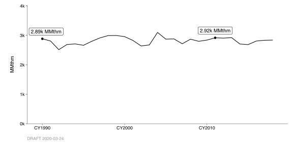
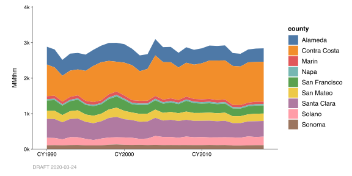
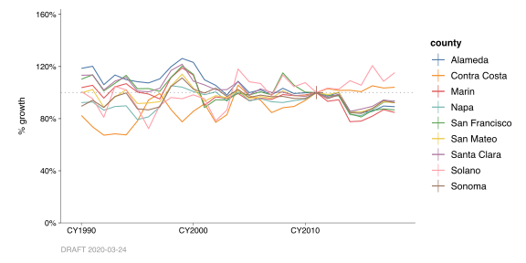
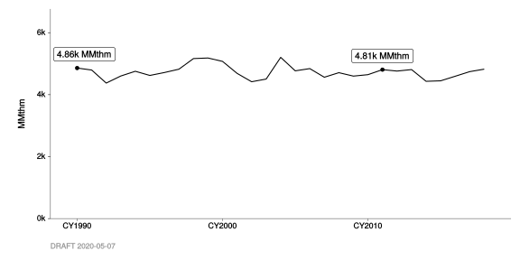
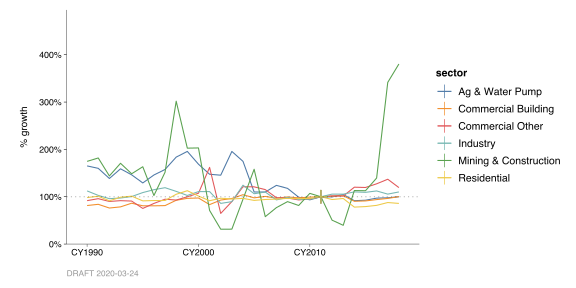
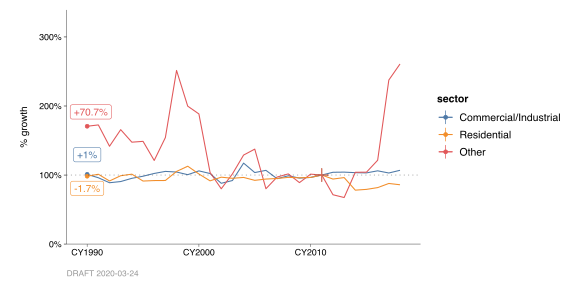

10 Third-Party Data
You can use the chart_*_by() family of functions with third-party data too.
This set of examples pulls from an R library, ECDMS, that contains tidied data harvested from the California Energy Consumption Database (ECDMS). These data, published by the California Energy Commission (CEC), provide estimates of annual natural gas and electricity consumption in California.
To gain access, we just type library(ECDMS).
10.1 Natural Gas Consumption
In the ECDMS_gas_county_data dataset, natural gas consumption data are split by county, sector, and year. This dataset covers all of California, from CY1990 through CY2018. Here’s a preview:
| year | sector | county | tput_qty | tput_unit |
|---|---|---|---|---|
| CY1990 | Non-Residential | Alameda | 229.905609 | MMthm |
| CY1990 | Non-Residential | Amador | 11.658194 | MMthm |
| CY1990 | Non-Residential | Butte | 17.028776 | MMthm |
| CY1990 | Non-Residential | Calaveras | 0.331382 | MMthm |
| CY1990 | Non-Residential | Colusa | 11.785811 | MMthm |
| CY1990 | Non-Residential | Contra Costa | 701.736398 | MMthm |
What we’re interested in is tput_qty — so chart_annual_throughputs_by() will “just work”.
10.1.1 San Francisco Bay Area (9 Counties)
Let’s take SFBA_gas_county_data to be the subset belonging to Alameda, Contra Costa, Marin, Napa, San Francisco, San Mateo, Santa Clara, Solano, and Sonoma counties.
#
# Note: `DST_COUNTY_NAMES` is supplied by the `inventory` package.
#
SFBA_gas_county_data <-
ECDMS_gas_county_data %>%
filter(
county %in% names(DST_COUNTY_NAMES)) Now let’s create a set of plots:
- Throughput, total
- Relative growth, total
- Stacked throughputs, by sector
- Relative growth, by sector
- Stacked throughputs, by county
- Relative growth, by county
For the relative-growth charts, we’ll specify base_year = CY(2011).
SFBA: Total Consumption

SFBA: Total Growth
SFBA: Consumption by Sector
SFBA: Growth by Sector
SFBA_gas_county_data %>%
chart_annual_growth_by(
color = sector,
base_year = CY(2011),
flag_years = CY(1990))Here we see that, in the nine-county Bay Area, Non-Residential gas consumption has been trending slightly upward over time, at about 0.3% growth per year. Residential consumption, on the other hand, has been trending slightly downward, at about -0.3% per year.
SFBA: Consumption by County

SFBA: Growth by County

10.1.2 PG&E Planning Area
Above, we saw that ECDMS_gas_county_data is split by county. There is a different tabular dataset, ECDMS_gas_plan_data, that is split instead by plan (“planning area”).
Let’s take PGE_gas_plan_data to be the subset where plan is “Pacific Gas and Electric”.
Now let’s recreate a similar set of plots:
- Throughput, total
- Relative growth, total
- Stacked throughputs, by sector
- Relative growth, by sector
The total annual consumption is higher in PGE_gas_plan_data — more like 5 billion therms, versus the 3 billion therms we saw in SFBA_gas_county_data.
PG&E: Total Consumption

PG&E: Total Growth
PG&E: Consumption by Sector
PG&E: Growth by Sector
PGE_gas_plan_data %>%
chart_annual_growth_by(
color = sector,
base_year = CY(2011),
flag_years = CY(1990))
If we like, we can collapse these sectors into “Residential”, “Industrial/Commercial”, and “Other”.
PGE_gas_plan_data %>%
mutate_at(
vars(sector),
~ fct_collapse(
.,
"Residential" = "Residential",
"Commercial/Industrial" = c(
"Industry",
"Commercial Building",
"Commercial Other"),
group_other = TRUE)) %>%
chart_annual_growth_by(
color = sector,
base_year = CY(2011),
flag_years = CY(1990))
This shows something different than the analysis by county.
Residential consumption (MMthm). In both datasets, we see about 2 billion thm/yr. That doesn’t necessarily imply that the two datasets cover identical populations (i.e., consumers), but it doesn’t rule it out, either.
Residential growth. In this
PGE_gas_plan_data, we can see a strong long-term decline in Residential consumption — CY1990 was 65% higher than CY2011, so about -3% per year. That’s a full order of magnitude larger than the 0.3%/yr we saw inSFBA_gas_county_data.Commercial/Industrial consumption (MMthm). The amount of natural gas consumed by the Commercial and Industrial sectors, as reported in
PGE_gas_plan_data, is almost twice as high as that labeled “Non-Residential” inSFBA_gas_county_data(3 billion vs 1.5 billion therms, respectively).Commercial/Industrial growth. Even though the two datasets don’t cover the same non-residential population, compared to the “Non-Residential” consumption in
SFBA_gas_county_data, the long-term growth in the Commercial and Industrial sectors here looks similarly flat — a fraction of a percent per year.
Recall that PGE_gas_plan_data comprises almost 5 billion therms, whereas SFBA_gas_county_data comprised only 3 billion. So, these differences might be reconcilable. There could be large populations of consumers covered by one that aren’t covered by the other.
This section was intended to give you a sense of what you can do with third-party activity data. You can do very similar things, of course, with third-party emission data. The key is to have the expected variables in your dataset (tput_qty and tput_unit, and/or ems_qty and ems_unit). And, you can always fall back to the more generic chart_annual_quantities() and/or chart_annual_growth(), so long as your dataset has at least one variable ending in _qty.